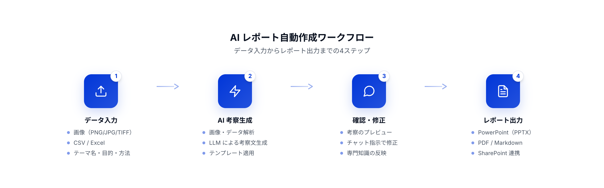

Report Automation
報告書・レポート自動作成ソフトウェア
AI画像解析と自然言語生成を組み合わせ、測定データ・画像から技術報告書をワンクリックで自動生成。作成時間を大幅に短縮し、品質を標準化します。
概要
測定データや画像をアップロードするだけで、AIが考察文を自動生成。 テンプレートに沿ったレポートをワンクリックでPowerPoint/PDFとして出力します。 チャット指示による修正機能で、専門家の知見を効率的に反映できます。
導入効果
- AIによる画像・データの考察自動生成で作成時間を大幅短縮
- テンプレート＋AI生成で品質のばらつきを解消
- チャット指示による修正で専門家の知見を効率的に反映

顧客の業界
- 品質保証
- 研究開発
- 製造
- 分析受託
- 材料
- 化学
解決する課題
Before
- 画像やデータの考察を毎回手作業で記述
- 担当者ごとに体裁・表現・深度がばらつく
- 画像貼り付け・キャプション・スライド整形に時間がかかる
- 転記ミスやレビュー差し戻しが発生
After
- AIが画像・データを解析し考察文を自動生成
- テンプレートとプロンプト設計で品質を標準化
- ワンクリックでPowerPoint/PDF出力まで完了
- チャット指示で修正でき、レビュー工数を削減
ワークフロー
データ入力からレポート出力まで、4つのステップで完結します。

ソフトウェアの機能説明
AI画像・データ解析
画像やCSV/Excelデータをアップロードすると、AIが内容を解析し考察文を自動生成します。
チャット指示による修正
生成された考察に対して、チャット形式で修正を指示。専門知識を効率的に反映できます。
レポート自動構成
テンプレートに沿って画像・考察・まとめを自動配置し、統一されたレポートを構成します。
PowerPoint / PDF出力
ワンクリックでPPTXまたはPDFとしてダウンロード。SharePointへの直接保存にも対応します。
Webアプリケーション
ブラウザから利用可能なWebアプリとして提供。インストール不要ですぐに利用開始できます。
入力
画像（PNG/JPG/TIFF）、CSV/Excel、メタ情報
出力
PowerPoint（PPTX）、PDF、Markdown
連携
社内サーバー、クラウド（GCP/AWS）、SharePoint
技術要素
- LLM
- Vision AI
- 自動レポーティング
- テンプレートエンジン
- Webアプリ
アウトプット例
お問い合わせ
既存の業務フローやテンプレートに合わせた最適なAIレポート自動化をご提案します。
- 既存テンプレートに合わせたカスタマイズ
- AI解析プロンプトの業務特化設計
- クラウド / オンプレミスの運用設計